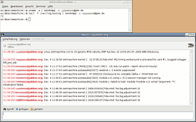

sendxmpp
Dieser Artikel wurde für die folgenden Ubuntu-Versionen getestet:
Ubuntu 14.04 Trusty Tahr
Zum Verständnis dieses Artikels sind folgende Seiten hilfreich:
 sendxmpp
sendxmpp  ist ein Kommandozeilen-Programm zum Verschicken von Instant Messages via XMPP-Protokoll. Die IMs können sowohl an individuelle Empfänger als auch in Chatrooms übertragen werden.
ist ein Kommandozeilen-Programm zum Verschicken von Instant Messages via XMPP-Protokoll. Die IMs können sowohl an individuelle Empfänger als auch in Chatrooms übertragen werden.
Das Programm ist kein IM-Client, da mit sendxmpp Nachrichten lediglich versandt, aber nicht empfangen werden können!
Voraussetzung zur Benutzung ist ein Account auf einem XMPP-Server. Da es ein Kommandozeilenprogramm ist, kann es in Skripten eingesetzt werden, um beispielsweise Diagnosedaten eines entfernten Rechners zu übertragen.
Installation¶
 Sendxmpp ist in den offiziellen Paketquellen enthalten und kann über das folgende Paket installiert werden [1]:
sendxmpp (universe)
 mit apturl
mit apturl
Paketliste zum Kopieren:
sudo apt-get install sendxmpp
sudo aptitude install sendxmpp
Konfiguration¶
Zur bequemen Benutzung empfiehlt es sich, die Datei ~/.sendxmpprc im Homeverzeichnis anzulegen [2]. Diese Datei beinhaltet die Login-Daten zum XMPP-Server, den man zum Versenden der Nachrichten verwenden möchte, und wird automatisch berücksichtigt (falls vorhanden).
Die Datei enthält nur eine Zeile (es können natürlich Kommentarzeilen mit # eingefügt werden) mit dem Inhalt:
# port und componentname sind optionale Angaben user@server[:port] Passwort [componentname]
Hinweis:
Die Angabe eines Ports ist nur notwendig, wenn dieser von Port 5222 (ohne Verschlüsselung) bzw. 5223 (mit Verschlüsselung) abweicht oder es zu Fehlermeldungen (uninitialized value) kommt.
Beispiel für die Konfigurationsdatei¶
Angenommen, Nutzerin Alice hat auf dem Server myjabberserver.com den Account alice@myjabberserver.com mit dem Passwort geheim.
Dann ist die Konfigurationsdatei wie folgt aufgebaut:
# Account von Alice alice@myjabberserver.com geheim
Benutzung¶
Das Programm liest standardmäßig von stdin und sendet an die angegebene Empfängeradresse (zum Beispiel bob@bobsjabberserver.org):
echo 'hallo' | sendxmpp bob@bobsjabberserver.org
Um die Kommunikation mit TLS zu sichern, nutzt man die Option -t:
echo 'geheime Nachricht' | sendxmpp -t bob@bobsjabberserver.org
Um eine Nachricht ohne die ~/.sendxmpprc-Kofigurationsdatei verschicken zu können, werden die Optionen -u <Nutzer> -j <Servername> -p <Passwort> benutzt. Wenn also Nutzerin Alice mit dem Account alice@myjabberserver.com und dem Passwort geheim ohne Konfigurationsdatei eine Nachricht verschicken möchte, lautet die Syntax wie folgt:
echo 'hallo ohne Konfigurationsfile' | sendxmpp -u alice -j myjabberserver.com -p geheim bob@bobsjabberserver.org
Übersicht der wichtiger Optionen von sendxmpp¶
Hier noch einmal die genannten und noch einige weitere Optionen in einer kurzen Übersicht:
| Optionen für sendxmpp | |
| sendxmpp-Option | Beschreibung |
-f <file> | Benutzung einer alternativen Konfigurationsdatei. Diese Option funktioniert aber offensichtlich nicht! |
-u <Nutzer> | Damit ist der Programmaufruf auch ohne Konfigurationsdatei möglich! |
-j <Servername> | |
-p <Passwort> | |
-r <Ressource> | Angabe der Ressource, z.B. Laptop oder Rechner@home |
-t | Verschlüsselung der Nachricht mit TLS |
-m <file> | Hier wird nicht von stdin gelesen, sondern es wird der Inhalt von <file> versendet |
-i | interactive-mode, fortlaufendes Lesen und Versenden von stdin |
Es gibt noch mehr Parameter, welche man in der ManpPage von sendxmpp nachlesen kann.
XMPP-Ping¶
Leider kann man nicht von jedem Server Nachrichten verschicken. sendxmpp verwendet im XML der Nachricht ein xmpp-ping, welches nicht von jedem Server unterstützt wird. Server, welche ejabberd ab Version 2.1.0 benutzen, sollten von diesem Problem nicht betroffen sein.
Folgende Server können nicht zum Verschicken von Nachrichten verwendet werden (Stand Dezember 2009, bitte ergänzen):
xmpp-gmx.gmx.net
xmpp-webde.gmx.net
Folgende Server können zum Verschicken von Nachrichten verwendet werden (bitte ergänzen):
jabber.org (Login nur ohne
componentnamemöglich, die Angabe eines Ports ist nicht notwendig)jwchat.org
headcounter.org mit Option
-t
Anwendungsbeispiele¶
Um zum Beispiel einem Freund mit Computerkenntnissen die öffentliche IP-Adresse des eigenen Computers mitzuteilen, damit dieser sich zu Wartungszwecken auf dem Rechner einloggt, kann dieser Einzeiler verwendet werden:
wget --quiet -O - http://showip.spamt.net | sendxmpp bob@bobsjabberserver.org
Man kann sich die Temperatur der Festplatte oder die Ausgaben von Hardwaresensoren senden lassen, z.B. aus einem Skript, welches als Cron-Job (bitte Hinweis unten beachten) wiederholt wird. Damit ist die bequeme Überwachung von Hardwaredaten eines Computers von einem entfernten Computer möglich.
# Festplattentemperatur von /dev/sda sudo hddtemp /dev/sda | sendxmpp bob@bobsjabberserver.org # Ausgabe von sensors sensors | sendxmpp bob@bobsjabberserver.org
Es ist möglich, kontinuierlich die Systemnachrichten mit dem sogenannten interactive-mode (Option -i) zu verschicken.
tail -f /var/log/syslog | sendxmpp -i bob@bobsjabberserver.org
Problembehebung¶
Es gibt viele Fälle, in denen sendxmpp mit Root-Rechten ausgeführt würde, beispielsweise in Cron-Jobs oder Upstart-Scripts (siehe z.B. rc.local und NetworkManager/Dispatcher).
Da insbesondere bei Netzwerkverbindungen leicht ausnutzbare Sicherheitslücken entstehen können, ist es in solchen Fällen dringend anzuraten, sendxmpp mit normalen Benutzerrechten auszuführen. Für Zwecke wie die oben genannten, wo sendxmpp regelmäßig genutzt werden soll, ist es ratsam, hierfür einen eigenen Benutzer anzulegen (Den eigenen Benutzer hierfür zu verwenden ist keine gute Lösung: Damit hat ein potentieller Angreifer zwar keine Root-Rechte, hat aber dennoch Zugriff auf alle Dateien des Benutzers).
sendxmpp kann dann mit sudo aufgerufen werden:
sudo -H -u sendxmpp sendxmpp OPTIONEN`
Die Option -u gibt den verwendeten Benutzer an (hier wird angenommen, dass der angelegte Benutzer sendxmpp heißt), die Option -H sorgt dafür, dass als Homeverzeichnis das des angegebenen Benutzers verwendet wird und nicht das des aufrufenden Benutzers (meist wohl root). Je nachdem, wo man die zu verwendende sendxmpp-Konfigurationsdatei ablegen möchte, kann man diese Option natürlich auch weglassen.
 Übersichtsartikel
Übersichtsartikel- Erstellt mit Inyoka
-
 2004 – 2017 ubuntuusers.de • Einige Rechte vorbehalten
2004 – 2017 ubuntuusers.de • Einige Rechte vorbehalten
Lizenz • Kontakt • Datenschutz • Impressum • Serverstatus -
Serverhousing gespendet von